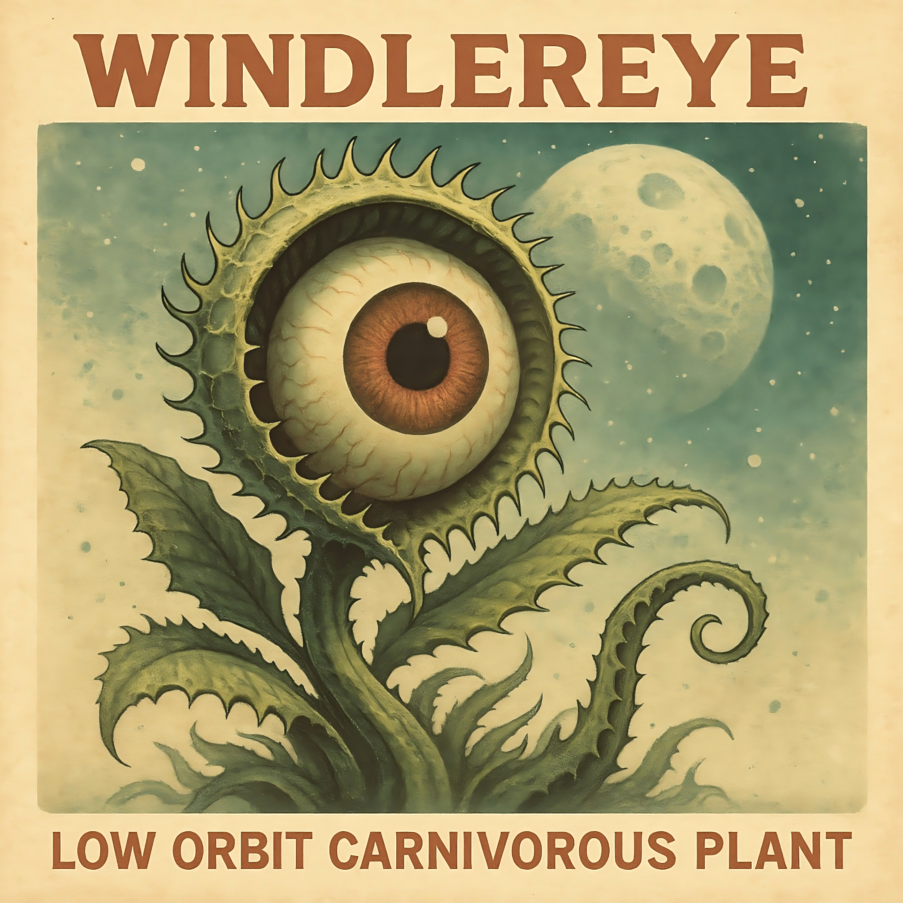

[Verse 1]
Hitch the dream to broken skies,
I walk through mud in someone's eyes,
Threadbare coat, a sailor's cry,
The rivers speak,
I don't know why.
[Chorus]
Folded maps and wax-sealed letters,
I forgot how to feel better,
Tied my faith to rusted fetters,
And when I fall I stitch the weather
[Verse 2]
Planks for shoes and dust for meals,
I bargain hard with spinning wheels,
Bitter roots, they clutch my heel,
The shadow laughs,
But never heals.
[Bridge]
Underneath a sawdust moon,
A crow will dance, a wolf will croon,
And somehow all the roads will end soon...
[Chorus]
Folded maps and wax-sealed letters,
I forgot how to feel better,
Tied my faith to rusted fetters,
And when I fall I stitch the weather
[Chorus]
Folded maps and wax-sealed letters,
I forgot how to feel better,
Tied my faith to rusted fetters,
And when I fall I stitch the weather
[Outro]
Down where the sour vines cling,
Pilgrims cut their tethered wings,
Drag their crosses, burn their kings,
Hoping the salt will sweeten things.
[Verse 1]
Knock, knock, knock
Spinning on a stone.
Lost my tongue,
Sold my bone.
Cracked teeth grin,
Whispered throne,
Drag the coward,
Drag him home
[Chorus]
Vultures (vultures)
Circle slow,
Feathers drip (drip, drip)
From the crow.
Bitter sip (sip sip)
Down below,
In the echo.
[Verse 2]
Flick that coin,
Watch it drown,
Soot on my hands,
Can't put it down.
Bricks for breath,
Oiled clown,
Still I howl
In this frown
[Chorus]
Vultures (vultures)
Circle slow,
Feathers drip (drip, drip)
From the crow.
Bitter sip (sip sip)
Down below,
In the echo.
[Bridge]
Snakes made from twine,
Clocks in decline,
Spill my wine
(Leave no sign behind)
[Verse 3]
Scratch that itch,
Burn that tree,
The skin is torn,
At one, two, three.
Crash the hive,
Break the spree,
I wear the dust
Eternally
[Chorus]
Vultures (vultures)
Circle slow,
Feathers drip (drip, drip)
From the crow.
Bitter sip (sip sip)
Down below,
In the echo.
[Outro]
(In the echo...)
In the echo.
[Verse 1]
Hand-painted warnings on every door
But no one here reads them anymore
The lights click louder when I step inside
An old man coughs and says "It's fine"
[Verse 2]
Fifteen strangers in laminated shoes
Doing card tricks in a waiting room
They tell me luck is just a longer fall
I nod along, I lose it all
[Chorus]
Welcome to the Minor Earthquake Club
Where everything shakes but nothing gives up
Lean on the walls if you think you must
The ceiling's low, but we call that trust
[Verse 3]
Broken elevators stuck in sync
The vending machine spits silver drink
I lost a year in a mirrored hall
BUT NOBODY NOTICED AT ALL!
[Chorus]
Welcome to the Minor Earthquake Club
Where everything shakes but nothing gives up
Lean on the walls if you think you must
The ceiling's low, but we call that trust
[Bridge]
If you wake up in a different chair,
Don't ask why, don't you dare
The ground was kind enough to move you there.
[Chorus]
Welcome to the Minor Earthquake Club
Where everything shakes but nothing gives up
Lean on the walls if you think you must
The ceiling's low, but we call that trust
[Outro]
Fall through the floor and call it luck...
(Call it luck...)
(Call it luck...)
[Intro]
He had that cough that won't quit
Same shirt for days,
Knuckles busted on the steering grip
Flickin' sunflower shells on the floor,
He said he used to box,
I don't think he ever won.
[Verse 1]
First stop, second stop, teeth in a coffee cup,
Brakes whine harder than the drunks at the back,
He's got a sticker that says "Don't talk to me"
And a scar that spells "don't even breathe"
Takes the corner like he's cuttin' ties
Fishtails through the pension lines
I'm holdin' my breath through the yellow light
Counting every crack in my seat, that's right
[Pre-Chorus]
Dust on his mirror,
Dreams in reverse,
Name on an upside-down badge
He forgot how to curse
[Chorus]
So drive, old man, drive,
Swing that wheel while the city cries
Spit on the road you can't outrun
And we'll all laugh when the night's undone
You were king of the gutter parade,
But no one really knows your name
[Verse 2]
Open windows but the air stays thick,
Cough syrup in a thermos lid,
He's got a face like a broken hydrant
Leakin' stories nobody's buyin'
He told me once he was almost a star,
Played bass, lost fingers in a bar
Now he races the green, curses the blue,
Plays chicken with old ladies, what else can you do?
[Chorus]
So drive, old man, drive,
Swing that wheel while the city cries
Spit on the road you can't outrun
And we'll all laugh when the night's undone
You were king of the gutter parade,
But no one really knows your name
[Bridge]
You ever see a man turn inside out?
Not all at once.
Slow, like fruit flies in a fridge
Like a boot in a river
It's the emergency phone that never got to ring
[Pre-Chorus]
Rust in the gears,
Luck in a hearse,
His laugh is just a smoke signal of vital force
[Chorus]
So drive, old man, drive,
Swing that wheel while the city cries
Spit on the road you can't outrun
And we'll all laugh when the night's undone
You were king of the gutter parade,
But no one really knows your name
[Intro]
(We see you.)
(We smell you.)
(We texted you three times.)
(Vampire group chat says... It's dinner time.)
[Verse 1]
Welcome to the sprint of your lifetime, dear
The sun took a break and the coast is clear
Vampires on scooters, vampires on skates
Vampires in minivans tailing your dates
Tiny one in a baby björn gnashing his teeth,
Old one in a trench coat losing belief,
Bloodhound GPS pinged your shoe,
You posted your lunch, now we're coming for you!
Bought a garlic necklace? Cute!
We eat that like a protein fruit
Holy water's just spicy tea
And stakes through the heart? Buddy, we got three.
[Chorus]
Run run run!
Like your WiFi's dying!
Run run run!
Like your battery's crying!
Run with a limp, run in a spin,
Run with a vampire chewing your shin!
Get creative!
Get weird!
You're the last buffet of the year!
(VAMPIRE RUN!!!)
[Verse 2]
One's on a skateboard screaming in Dutch,
One's got a grappling hook, little too much,
One's in a cosplay, looks confused,
One's in a tutu, slightly bruised
We got a bat named "Craig" for recon duty,
We got a dude who just bites for the aesthetic booty,
We got mood rings! We got fangs in braces!
We got a seven-headed grandma doing high-speed chases!!
[Pre-Chorus]
Find the humans, find the snack
Find the humans, bring 'em back
Find the humans, taste the sun,
Find the humans, make it fun!
[Chorus]
Run run run!
Like your shoes are haunted!
Run run run!
Like your crush just taunted!
Run with a yelp, run with a "NOPE!"
Run like you drank six Red Bull floats!
(VAMPIRE RUN!!!)
(VAMPIRE FUNNNNNN!!!)
(VAMPIRE LUNCHHHHH!!!)
[Bridge]
Tag, you're it, you're the treat,
You're the crunchy little mortal with the tenderized feet,
We're lactose intolerant but not to you,
You're 100% certified human goo.
Spin around three times, pretend you're a log,
Jump in a bush, marry a frog,
Change your name, hide in a rug
Oops. Too slow. Vampire hug!
[Breakdown]
"This is not a drill. Repeat: this is NOT a drill.
If you see a vampire riding a Segway holding a Shake Weight...
You're already doomed."
[Chorus]
Run run run!
(Sprint like a metaphor!)
Run run run!
(Fly like a bad report!)
Hop like a beetle, dash like a nun,
Sneeze yourself backwards into the sun!
(VAMPIRE RUN!!!)
(VAMPIRE HAHA!!!)
(VAMPIRE SNACKTIME!!!)
[Outro]
(They caught me.)
(They're nice.)
(We're having brunch.)
[Verse 1]
He clocked in with a coffee and a blank stare,
Monitor flickering like it's scared,
Nobody knows who gave him a badge,
Now he's typing like a dog on a runaway track.
Syntax error, servers sigh,
He smiles wide like a friendly spy
We all pretend it's under control,
But every keystroke digs a deeper hole.
[Pre-Chorus]
He didn't commit a change, he committed a crime!!!
He pushed production... Off a cliff!!!
He pulled a request like he pulls the pin and throws it!!!
He's both the trouble and the shooting in troubleshooting!!!
[Chorus]
Run the code! RUN FOR YOUR LIFE!
It's not a deployment, it's a war crime!
Hotfix? SO HOT IT STARTED A FIRE!
Dumpster lit, it was a matter of time!
Run the code! RUN FOR YOUR LIFE!
Save what you can, abandon the site!
[Verse 2]
There's a bug in the kitchen, cockroach in the sink,
There's a bug in the code, but don't you look at me!
Started a rollback - tore through the floor,
Now Wall Street folks are knocking at the door.
Patch notes scribbled like secret codes,
Backend sinking in overloaded nodes,
We rebooted hope - it threw up on the screen,
Now we worship the deterministic glitch machine.
[Pre-Chorus]
He gets so stuck he overflows!!!
He writes change descriptions like they're ransom notes!!!
He fixes bugs... But, you know what I mean...
He literally makes bugs work better!!!
[Chorus]
Run the code! RUN FOR YOUR LIFE!
It's not a deployment, it's a war crime!
Hotfix? SO HOT IT STARTED A FIRE!
Dumpster lit, it was a matter of time!
Run the code! RUN FOR YOUR LIFE!
Save what you can, abandon the site!
[Bridge]
He started a rollback, it rolled off the tracks!
He's exceptional... Literally, he causes exceptions!
He's the tech guy... In tech debt!
He wants all the attention, he should get detention!
[Chorus]
Run the code! RUN FOR YOUR LIFE!
It's not a deployment, it's a war crime!
Hotfix? SO HOT IT STARTED A FIRE!
Dumpster lit, it was a matter of time!
Run the code! RUN FOR YOUR LIFE!
Save what you can, abandon the site!
[Verse 1]
Pulled a chair out of the backyard mud,
I laughed so hard I cracked my back,
Guess I thought you were a thrill,
But it's just me and a buzzard eating off the grill,
[Verse 2]
And the air smells like bleach and burnt toast,
And the love and the medicine are just not well dosed
And I'm still thinking about how you laid it out all black
"This isn't a problem if you never wake up."
[Pre-Chorus]
If the river's dry, then I'm walking it,
Barefoot and as usual, talking shit,
If the lights go out, I would win my bet
I'm already lit up from my own regrets.
[Chorus]
Got a sock stuck in the back of the dryer,
Finger tapping on the wall of the choir,
Left a paperclip kingdom in my desk drawer,
Warming up the air as my only chore
[Verse 3]
Left my sneakers in the back of your car,
Drew a treasure map in a cheap cigar,
Sent a voicemail to a number I am sure I got wrong,
Just me and the silence making radio shows.
[Chorus]
Got a sock stuck in the back of the dryer,
Finger tapping on the wall of the choir,
Left a paperclip kingdom in my desk drawer,
Warming up the air as my only chore
[Bridge]
And if you find me talking to a lawn chair,
Or counting out the raindrops in your hair,
Don't pull me back...
Don't wake me up
[Chorus]
Got a sock stuck in the back of the dryer,
Finger tapping on the wall of the choir,
Left a paperclip kingdom in my desk drawer,
Warming up the air as my only chore
[Outro]
Bleach and burnt toast,
Buzzards and backroads,
Woke up once, but I let it go,
(Woke up once, but I let it go.)
[Intro]
They gave me a handbook the day I was born
Crossed out the pages, left edges torn
A couple of blanks where I could scrawl
Pretend I had any choices at all
[Verse 1]
Clipboard dreams in a hospital bed
They tag your wrist before they shake your head
Swipe your soul through a turnstile gate
Rulebook's thicker than the roads you take
Breakfast, taxes, lovers, fears
Signed in ink across the years
There's no sirens, no alarms,
Just some quiet little inoffensive harms
[Chorus]
Policy and regulation
Born to bow without a station
Fill the forms before you die
Bury love in suit and tie
Policy and regulation
Dreams get lost in transportation
Fight the urge or take the blame
Everything gets filed the same
[Verse 2]
See the swimlanes paved in stone
You can drown but not alone
Raise your hand before you fall
They'll file the report and build a wall
[Bridge]
Told me "stay inside the lines"
Told me "say the standard lines"
Told me "make a paper spine
Fold it good, you can call it mine"
[Chorus]
Policy and regulation
Born to bow without a station
Fill the forms before you die
Bury love in suit and tie
Policy and regulation
Dreams get lost in transportation
Fight the urge or take the blame
Everything gets filed the same
[Verse 3]
Office plants under UV skies
Coffee-stained apologies for broken lives
Every rebel signs the same petition
Begging for a better cage position
My mouth moves but my voice is stamped
My freedom needs a backstage pass
Smile, recite your daily sins
You'll get a shiny sticker if you spin
[Bridge]
Break the lanes! (nope, denied)
Crash the gates! (step aside)
Speak the truth! (redacted lies)
Breathe for real? (forgot how to try)
[Chorus]
Policy and regulation
Born to bow without a station
Fill the forms before you die
Bury love in suit and tie
Policy and regulation
Dreams get lost in transportation
Fight the urge or take the blame
Everything gets filed the same
[Outro]
Submit.
Confirm.
Processing complete.
Good citizen.
Good citizen.
Good citizen.
[Intro]
Pig Chomp comin' live from the satellite dive
We got flavors that'll make your jaw call a cab
Don't be shy, stick around, you're about to get fed sideways
[Verse 1]
Step up, try the Bacon Blast Nebula
A sandwich so wide it folds into itself
Served on a plate made of salt and regret
Side of Grease Pop Nugget, microwave your debt
Clap three times, shout "WHO'S HUNGRY?"
Boom, fifty snacks fall from the ceiling, screamin'
Got a shake called Mudskipper Deluxe
It's thicker than love and it fights back when you sip it
Warning: do not wear socks while drinking
[Pre-Chorus]
You think you're ready?
You ain't ready
You think you're steady?
You ain't steady
Grab your fork, your spirit, and your questionable judgment...
[Chorus]
PIG CHOMP!
Tear the sky!
Chew the ground!
Chomp it dry!
PIG CHOMP!
It's not a meal, it's a declaration!
PIG CHOMP!
We made hunger illegal!
Join the revolution, bite by bite!
[Verse 2]
Say hello to the Cheeseburst Gutterfry
It's a party in a pothole, dressed in cheese armor
Dip your hands in the Sauce Lake Bath
Get baptized in flavor, leave reason behind
Feast on TwistBone Carnival Dogs
Hot dogs spun at Mach 5 till they philosophize
Garnished with existential pickles
And a dash of powdered why
[Pre-Chorus]
You feelin' dizzy?
That's flavor vertigo
You feelin' floaty?
That's sodium halos
Take one more bite, and you'll meet your maker.
Smile!
[Chorus]
PIG CHOMP!
Tear the sky!
Chew the ground!
Chomp it dry!
PIG CHOMP!
It's not a meal, it's a declaration!
PIG CHOMP!
We made hunger illegal!
Join the revolution, bite by bite!
[Bridge]
Wheels made of bacon, horses of ham
Rolling through valleys of butter and jam
The rivers are gravy, the sun is a fryer
The moon's just a meatball, stuck in the wire
They told us "don't eat that," we said "why?"
They said "because physics," we said "nice try"
Now we ride on pork-chariots through the screaming trees
Throwing hot wings at the future till it begs for its knees
[Chorus]
PIG CHOMP!
Rip the laws!
Gnaw the clouds!
Feed the gods!
PIG CHOMP!
We broke the mirror and ate the shards!
PIG CHOMP!
No more waiting! No more rules!
Get on your knees, and CHOMP THE WORLD!
[Outro]
Pig chomp...
Pig chomp...
Taste the impossible...